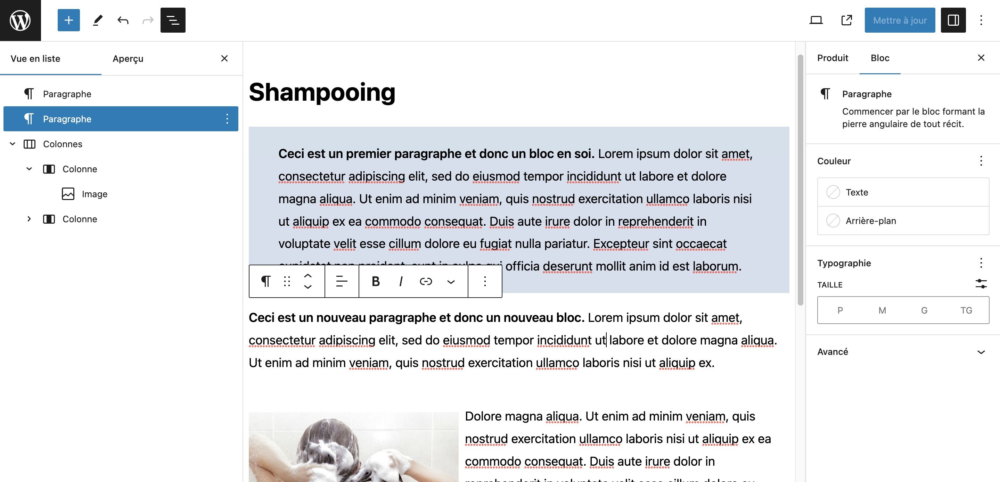
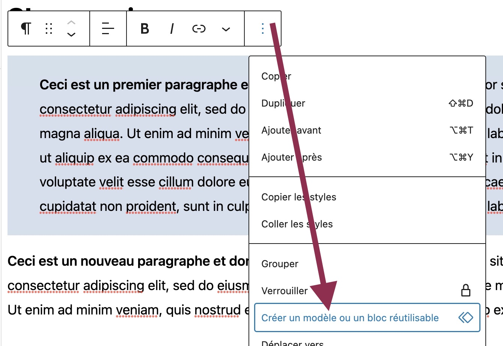

Depuis WordPress 5, l'éditeur de mise-en-page par bloc est inclu dans le coeur de WordPress. Cet éditeur se nomme Gutenberg qui est le nom de l'inventeur de l'imprimante.
Éditeur avec boîte à outils intégré qui vous permet de réaliser une mise-en-page perosnnalisée sans coder ni HTML, ni CSS.
Attention, il ne faut pas confondre un modèle (template) et l'utilisation de la mise en page par l'éditeur Gutenberg. Ce dernier sert essentiellement à la mise-en-page du contenu d'un article sprécifique et le tout se place un peu "à la main". Par exemple si je souhaite inclure une image au milieu d'un article et l'afficher à côté d'un paragraphe, je peux utiliser cet éditeur pour créer deux colonnes et y placer mon contenu, à droite l'image, à gauche mon paragraphe.
Notez que lorsque vous créez plusieurs colonnes avec Guternberg, elles s'affichent automatiquement l'une sous l'autre en format tablette ou en format mobile. Bref, c'est responsive !
Vous pouvez aussi créer des styles de bloc qui pourront être réutilisable de page en page.
Démonstration en classe.
Reproduire une mise en page démontrée en classe avec l'éditeur Gutenberg.